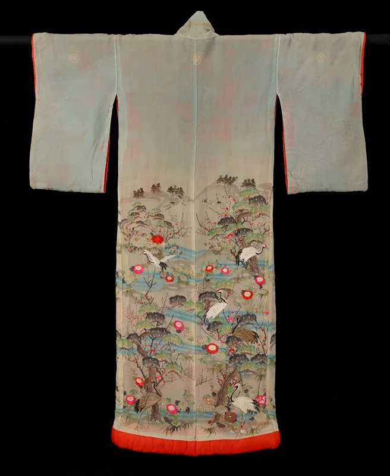

One of one. A story to wear.
Cool kimono archive.時を重ねた一枚を、これからの装いに。
Silk, a hidden lining, a pattern that catches your eye. Look closer at dimensions and condition, and keep your favourites side by side.絹の手触り、羽織の裏地、目にとまる文様。寸法や状態を確かめながら、気になる一枚を探せます。
Explore the collectionコレクションを見る
Selected specimens
Meet the collection.一枚ずつ、見て、比べる。
Open a piece to see its details. Keep up to three in your comparison list.写真から詳細を開き、気になる3点まで比較できます。商品情報は架空の設定です。
Your shortlist
A closer comparison.選んだ品を比べる
Check the selected pieces選んだ商品の確認へ進むBefore you decide
Look closer.
Ask what matters.気になる点を
確かめてから
Dimensions, lining, signs of wear. A useful enquiry starts with the piece and the detail you want to check.寸法、裏地、傷みの状態。気になる商品と確かめたい点をまとめると、お店とのやり取りも進めやすくなります。
Interaction demo only. No enquiry, purchase or reservation will be sent.確認画面の操作サンプルです。店舗への問い合わせ・購入・取り置きは行われません。
Your selected pieces選んだ商品
Choose or change pieces ↑商品を選ぶ・選び直す ↑About this design
Your collection,
in two languages.商品の魅力を
日本語と英語で
A website study by Minato AI・IT Lab. Product details, comparisons and enquiry previews help visitors decide what to ask next.ミナト AI・IT ラボによる制作例です。商品紹介から比較、問い合わせ内容の確認まで、ひとつの流れで見られる構成にしています。
Planning a website?商品紹介サイトを作りたい方へ
Tell us what you sell, who you want to reach and which languages you need. The links below contact the website maker, not a store.扱う商品、届けたい相手、必要な言語をお知らせください。以下は店舗ではなく、サイト制作の相談先です。